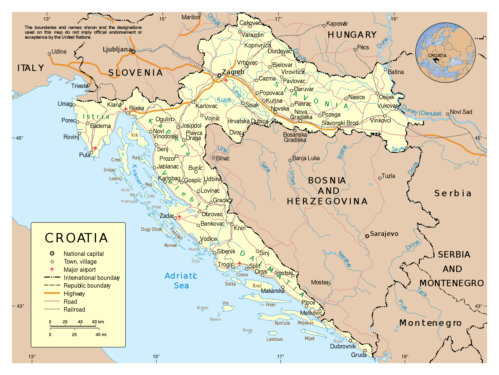
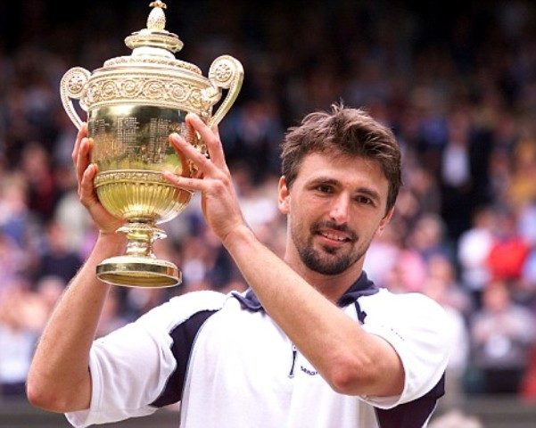
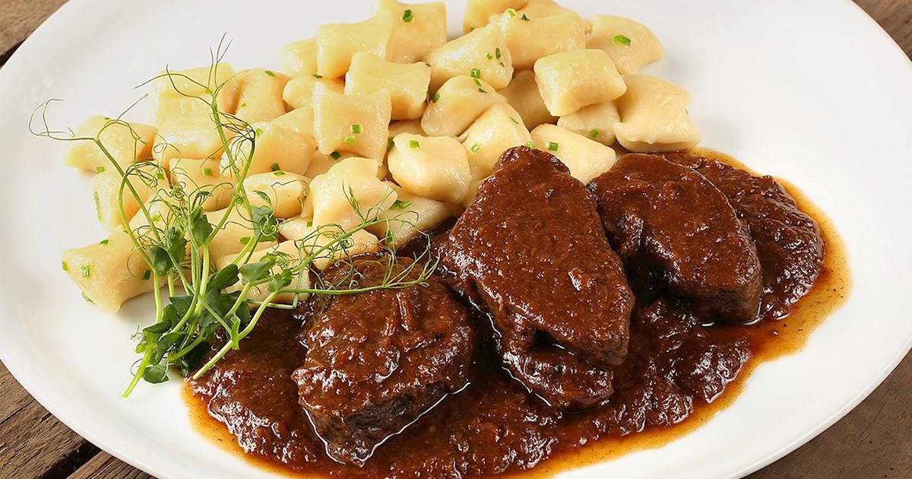
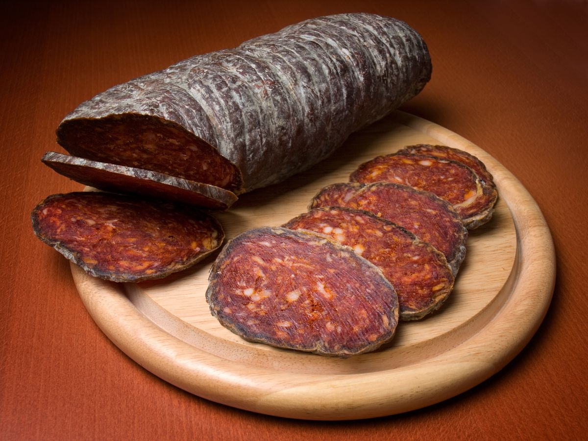
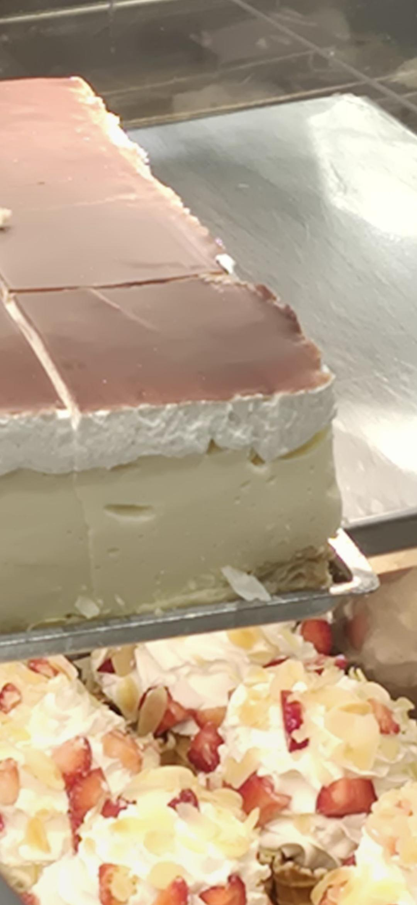

Political Map

Croatia shares land borders with Slovenia, Hungary, Serbia, Bosnia and Herzegovina, and Montenegro, while the long Adriatic coast faces Italy across the sea.
A land shaped by coast, mountains, and climate
Croatia's backbone is the Dinaric Alps, with peaks like Dinara (1,831 m), Velebit, and the Gorski Kotar highlands. Rugged karst mountains define the interior and shelter the coast from colder inland weather.
Rolling limestone hills shape Istria and inland Dalmatia, where vineyards, olive groves, and hilltop villages are common. These gentle heights contrast the sharper peaks of the Dinaric range.
The Pannonian Plain covers eastern Croatia with fertile fields, meadows, and wetlands. This continental interior is the country's agricultural heartland, stretching toward Hungary and Serbia.
Croatia's lakes range from the famous Plitvice terraces to hidden karst ponds and glacial basins. Plitvice Lakes alone include 16 turquoise pools fed by waterfalls and underground streams. Other notable lakes include Vransko, the largest natural lake, and Prokljansko, a unique saltwater lake.
A UNESCO World Heritage site with 16 interconnected lakes and waterfalls. Known for its travertine barriers and rich biodiversity, it's one of Croatia's most visited natural attractions.
Croatia's largest natural lake, located on Cres island. A saltwater lake with unique ecosystems, home to flamingos and other migratory birds, and a protected nature reserve.
A rare saltwater lake on the island of Čiovo. Connected to the sea by a narrow channel, it offers beaches, fishing, and a peaceful retreat near Trogir.
An artificial lake in Zagreb, created in the 1980s. Surrounded by parks and sports facilities, it's a popular spot for recreation, boating, and picnics in the city.
The Sava, Drava, and Kupa are Croatia's main rivers, draining inland plains toward the Danube basin. They have shaped historic trade routes, wetlands, and a rich network of floodplain habitats. Other notable rivers include Krka with its famous waterfalls and Una with its emerald waters. These waterways are vital for transportation, irrigation, and biodiversity.
Croatia's longest river, flowing 562 km through the country. It forms part of the border with Bosnia and Herzegovina, and is navigable, supporting trade and connecting Zagreb to the Danube.
A major tributary of the Danube, spanning 305 km in Croatia. Known for its wetlands and biodiversity, it supports fishing and is a key habitat for birds and fish species.
Rising in Slovenia and flowing 296 km through Croatia. It forms the border with Slovenia and is known for its clear waters, canyons, and as a source of hydroelectric power.
Famous for its seven waterfalls and travertine pools. The river is a UNESCO-protected area, home to unique flora and fauna, and a popular destination for rafting and swimming.
Known for its emerald-green waters and waterfalls. It forms part of the border with Bosnia, offering opportunities for kayaking and rafting in its pristine, unspoiled environment.
Croatia counts 1,244 islands, islets, and reefs. Including islands, the true coastline is roughly 5,835 km long, far more than the 1,777 km of mainland shore. The largest islands include Krk, Cres, Brač, Hvar, Pag, and Korčula, each offering unique landscapes and histories.
The largest Croatian island by population, connected to the mainland by a bridge. Known for its olive groves, vineyards, and the historic town of Krk with Roman ruins.
The longest island, famous for its griffon vultures and the endangered olm salamander. Cres is sparsely populated with lush forests and clear waters.
Home to the highest peak of all Adriatic islands (Vidova Gora). Renowned for its white stone quarries, used in building Diocletian's Palace in Split.
The sunniest island, famous for lavender fields, ancient fortresses, and vibrant nightlife. Hvar Town is a UNESCO candidate with Venetian architecture.
Known for its distinctive cheese and salt production. The island has a stark, lunar-like landscape with strong winds and a rich lace-making tradition.
Birthplace of Marco Polo, with fortified medieval towns and vineyards. The island's dense forests and olive groves make it a green paradise.
Three climates coexist here: Mediterranean on the coast, continental inland, and mountain climate in higher terrain. This variety supports coastal resorts, interior plains, and alpine forests.
Political borders and neighbouring countries of Croatia

Croatia shares land borders with Slovenia, Hungary, Serbia, Bosnia and Herzegovina, and Montenegro, while the long Adriatic coast faces Italy across the sea.
A young democracy at the heart of Europe
Flag of Croatia
Red-white-blue tricolour with the historic coat of arms (šahovnica), one of Europe's oldest heraldic symbols.
One of Europe's most biodiverse corners
UNESCO World Heritage site, 16 terraced turquoise lakes connected by 92 waterfalls. Home to bears, wolves, and lynx in surrounding forests.
An archipelago of 89 uninhabited islands, a labyrinth of sea channels, pristine reefs, and dramatic limestone cliffs dropping into deep blue water.
Dense beech and fir forests in the Gorski Kotar highlands, named after the Eurasian lynx (ris). One of Europe's last truly wild mountain environments.
Deep canyon gorges cutting through Velebit, famous for rock climbing and as habitat for golden eagles, peregrine falcons, and chamois.
Seven stunning waterfalls on the Krka River, surrounded by Mediterranean scrubland. The travertine pools shelter rare freshwater fish and otters.
The "greenest island", two saltwater lakes within a national park, dense Aleppo pine forests, and a 12th-century Benedictine monastery on an island within a lake.
A critically endemic plant found only on certain outcrops of Velebit mountain. It produces vivid yellow flowers and is one of Croatia's greatest botanical treasures.
A rare iris found exclusively along the Dalmatian coast. Its purple blooms appear in spring on rocky limestone terrain.
The Dalmatian coast is studded with ancient olive groves, some over 1,500 years old on Brač island, and wild fig trees clinging to old stone walls.
Istria's Motovun forest hosts the world's largest white truffles. A 1.31 kg specimen found at Buje in 1999 set the Guinness World Record.
The island of Hvar has cultivated lavender for centuries. Vast purple fields bloom in June, producing essential oils exported worldwide.
Introduced centuries ago, these exotics now characterise the Dalmatian landscape, growing along stone walls and cliff edges above the sea.
Croatia hosts ~1,000 brown bears, one of the densest populations in Europe. They roam the Dinaric forests of Gorski Kotar and Lika.
Around 200 wolves live in Croatia, protected since 1995. They play a key role regulating deer and wild boar populations across the Dinaric range.
Re-introduced in 1974 after being hunted to extinction, the Dinaric lynx population remains critically small (~40 individuals) and is an urgent conservation priority.
The cliffs of Cres island are home to one of the last griffon vulture colonies in the Mediterranean. A rescue centre protects the colony of ~70 pairs.
The Adriatic is a key feeding ground for loggerhead turtles. The island of Lastovo has a marine protected area important for their survival.
This blind cave-dwelling salamander (known as "human fish") lives in underground rivers. It can survive 10 years without food and live over 100 years.
Around 220 bottlenose dolphins inhabit the waters around Lošinj, the subject of Europe's longest-running cetacean research programme, since 1987.
Open Adriatic waters host blue sharks, shortfin mako, and occasionally great whites. Croatian fishermen have historically recorded dramatic encounters.
Dense seagrass meadows of Posidonia oceanica blanket the seabed around Kornati and Pelješac, nurseries for fish, sea horses, and octopuses.
The Adriatic is world-renowned for its squid and octopus, central to Croatian coastal cuisine and sustainable traditional fishing practices.
A growing economy driven by tourism and services
Croatia's fertile plains support wheat, corn, and sunflower production. The country is known for its olive oil, wine, and lavender exports.
The Adriatic Sea provides sardines, anchovies, and tuna. Aquaculture is growing, especially in shellfish farming.
Oil and gas extraction in the Pannonian Basin, along with bauxite and coal mining in various regions.
Shipbuilding in Rijeka and Split, pharmaceuticals, food processing, and metalworking are key industries.
Hydroelectric power from rivers, thermal plants, and increasing renewable energy from wind and solar.
Production of electric vehicles and components, with factories in various regions.
Banking, finance, IT, and telecommunications are rapidly growing sectors in urban areas.
Public healthcare system with increasing private sector involvement and medical tourism.
Universities in Zagreb, Split, and Rijeka, with growing international student enrollment.
Dubrovnik, Split, and Hvar attract millions of visitors annually for beaches and historical sites.
Plitvice Lakes and national parks draw eco-tourists and adventure seekers.
Wine routes in Istria and Slavonia offer tastings and vineyard visits.
Over 20 million visitors in 2019, contributing 20% to GDP. Recovery post-pandemic with sustainable tourism focus.
Languages, religions, and ethnic groups across Croatia
Croatian is the official language. Minority languages include Serbian, Italian, Hungarian, Czech, Slovak, and Romani, protected in local municipalities.
The majority of Croatians are Roman Catholic. Other faiths include Serbian Orthodox, Islam, Protestantism, and growing secular or non-religious communities.
Croats make up about 90% of the population. Significant minorities include Serbs, Bosniaks, Italians, Hungarians, Albanians, and Roma.
Inventors, scientists, athletes, and artists who shaped the world

Inventor & Electrical Engineer
Born 10 July 1856 in Smiljan (now Croatia). Pioneer of alternating current (AC), the induction motor, and wireless transmission. His work underpins modern electrical systems worldwide.

Football Player
Born 1985 in Zadar. Real Madrid and Croatia legend, winner of the 2018 Ballon d'Or. Led Croatia to the 2018 World Cup Final and 2022 third place.

Tennis Player
Born 1971 in Split. Won Wimbledon 2001 as a wildcard in one of tennis's most dramatic finals. Known for his devastating serve — at one time the fastest in the world.

Chemist – Nobel Laureate 1939
Born 1887 in Vukovar. Awarded the Nobel Prize in Chemistry for work on polymethylenes and higher terpenes, laying the foundation for modern steroid chemistry.
A table where the Mediterranean meets Central Europe

Beef marinated for 24 hours in vinegar and spices, then slow-braised with prunes, wine, and vegetables. The quintessential Sunday dish of Split and central Dalmatia.

Hand-rolled pasta shapes unique to Istria, fuži are quill-shaped rolls, pljukanci are twisted noodles, served with truffle or wild boar ragù.

A heavily spiced cured sausage flavoured with sweet and hot paprika. Slavonski kulen has EU Protected Designation of Origin status.

The iconic dessert of Samobor near Zagreb. Layers of crisp puff pastry sandwiching thick vanilla custard cream, dusted with icing sugar.
Things you probably didn't know about Croatia
The modern necktie originates from Croatia. Croatian soldiers in the Thirty Years' War wore distinctive scarves. The French adopted it, calling it "cravate", from Croate (Croatian). Cravat Day is celebrated every 18 October.
Dubrovnik's Old Town served as King's Landing in HBO's Game of Thrones. Croatia was also filmed in Split (Diocletian's Palace = Meereen), Šibenik, and Klis Fortress. Tourism increased over 50% during filming years.
Ivan Lupis, a Croatian officer in the Austrian Navy, invented the self-propelled torpedo in 1860, further developed with Robert Whitehead in Rijeka. The modern torpedo was born on Croatian soil.
Rimac Automobili's Nevera became the world’s fastest production electric hypercar, hitting 0–62 mph in 1.97 seconds and setting speed runs on Croatian roads and airstrips.
Hum in Istria has under 30 residents but still holds town status, historic walls, and a tradition of blessing its single main street each year.
Zagreb is home to unusual attractions like the Chocolate Museum, the Video Game History Museum, and the interactive 1980s museum, showcasing sweet traditions and retro digital culture in Croatia's capital.